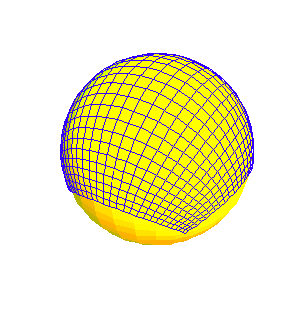
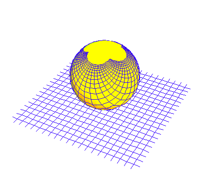
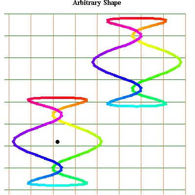
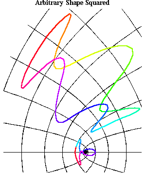
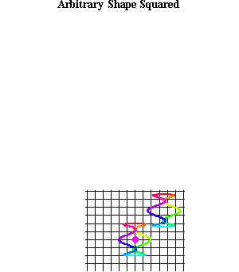
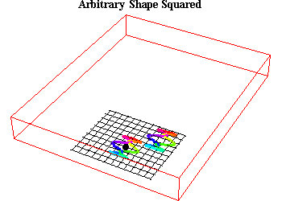
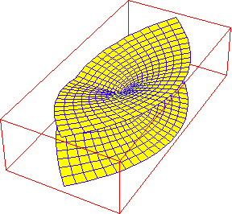

Riemann For Anti-Dummies Part 55
WHAT ARE THE REAL OBJECTS OF PHYSICAL SCIENCE?
The magician needs two essential elements for a successful trick. First, he must establish for the audience a certain set of definitions within whose context the illusion will occur: "nothing up my sleeve"; "there's nothing in this hat". (Unstated, of course, is the secret pocket in the sleeve or the false bottom in the hat.) Second, the audience, because it desires to be fooled, must be willing to accept these definitions as self-evident.
Aristotle was such a magician. Not of the Las Vegas stage show type, but, of the more sophisticated Babylonian priesthood type. The type that enslaved generations of people who felt they were more secure accepting the system as defined, rather than give up their foolish superstitions. Instead of saying, "nothing up my sleeve", Aristotle pronounced, "Our inquiry (as physicists) is limited to its special subject matter, the objects of sense...."
Contrary to Aristotle, the subject matter of physics is not objects of sense, but the physical principles that govern those objects. Those principles, and their relationship to the objects they generate, arise in the mind as what Riemann called, "Geistesmassen" or, "thought- objects". These thought-objects are the real objects of physical science.
While Riemann's concept has a specific expression within the context of his own discoveries, which will be discussed in more detail below, it should also be seen from the broader historical context as well. Riemann's idea is directly in the tradition of the scientific method of the Pythagoreans and Plato, at whom Aristotle's trickery was aimed.
View this from the standpoint of the contradiction between the body of knowledge developed by the method typified by the Pythagoreans, Socrates and Plato, and the codification of that knowledge in Euclid's Elements which begins with a set of axioms, postulates and definitions, and derives all the theorems of geometry deductively from these self-evident assertions. Ironically, none of the discoveries described in Euclid's Elements could have been discovered by the Aristotelean method that infects Euclid. It is not the results the oligarchy seeks to obscure, (for that would be impossible), but the method by which those results were discovered, (which, like the magician's trick, depends on a witting victim). The real target of Euclid's Elements, Aristotle's Physics, and its more modern form, empiricism, is the real object of physics {the mind of the physicist}.
The Discovery of the Sphere
Begin with the simple case of the night sky. It is common to consider that we observe the night sky on the inside of a great sphere. But where did we get the idea of the sphere? Did it come from some authoritative text which {defined }a sphere as a surface that is everywhere equidistant from a center? Of course not, because the sphere is an {idea}, and an idea could never come from a definition.
Go out and look at the night sky. From the standpoint of sense-perception we see flickers of light against a dark backdrop contained within a cone of vision whose apex is our eyes. By moving around to see the whole sky, we generate, in the mind, a manifold that contains the entire night sky as a one. This manifold is not seen. We cannot see the entire sky at once. Yet, we can generate, in the mind, an idea of the manifold of the visual perceptions of the night sky. We give this idea a name sphere that expresses the relationship between our mind and the physical universe. It is this idea that becomes the object of our investigations. Not some abstract, formally defined geometrical figure, but the thought-object generated by our investigation of the universe itself. This is why the Pythagoreans and Plato called astronomy, "geometry in motion".
This manifold has certain characteristics that are determined by the physical action from which it is generated. All the celestial objects are of a finite, but undetermined, distance from the observer, i.e. equidistant. What is that distance? Very far. Furthermore, under the motion that generates this sphere, all the points in the manifold move, except one: the point directly above (and, implicitly, directly below) the observer .
However, over the course of the night, the motion of the stars generates, in our minds, a new manifold a manifold of spheres rotating around the celestial pole. That pole is in a different position relative to the pole located directly above the head of the observer. The interaction between these two ideas, the manifold of vision and the manifold of the rotation of the sphere of vision, generates a new idea concerning the relationships of spheres whose poles are in different positions. The investigation of this new idea, leads directly to the discovery of the five Platonic solids, as those objects generated by unique, regular, harmonic motions of the sphere.
The motions of the wandering stars (planets) introduces motion in a contrary direction to the nightly motion, giving rise to a new idea, which Plato, in the Timaeus, called the circle of the same and the circle of the other. Further, these motions of the planets are non-uniform with respect to the nightly motion, and with respect to each other, which Kepler determined was the reflection, onto the sphere, of elliptical motion. Gauss, investigating this projection onto the sphere, of elliptical motion, from the standpoint of the complex domain, found its even deeper significance through his investigations of Napier's pentagramma mirificum. Riemann, through his investigations of Gauss's discoveries, extended this complex of manifolds as expressed by his treatment of Abelian and Hypergeometric functions.
Thus, the objects of investigation of physical science are the physical principles that act from outside the visible domain, but project their effect, tangentially, onto the visible domain in the form of harmonic relationships recognizable by reason. From these harmonic relationships we can conceive ideas that efficiently reflect those physical principles. When we willfully act on those ideas so generated, the physical universe responds. Thus, to act on the physical universe, the physicist must act on ideas.
As Gauss's teacher, A.G. Kaestner, wrote:
"[T]he basis of truth and certainty is not in the metaphor of the subject, but in the intelligibility, the conceptions of reason in which those metaphors lie. That, I would think, would be obvious from those geometrical theorems that are capable of being proven. One never concludes from the form, but from it, one thinks of the reason of the form.''
So what are the objects of physical science? Watch your pocket when Aristotle says, "nothing up my sleeve."
Freeing the Mind from Aristotle
Now, compare the above pedagogical sketch with the formal abstract definitions of the sphere contained in modern geometry textbooks. There you find the sphere "defined" as that surface that is equidistant from a center. (Even Euclid did not reduce his definition of the sphere to this level. In Book XI of the Elements, Euclid defines the sphere as the surface produced by the rotation of a semicircle around its diameter.) From a formal standpoint, or from the standpoint of sense perception, the sphere produced by a formal definition, and the sphere produced by the interaction of a human mind with the night sky, "appear" to be the same.
But the formal definition is like the magician's trick. Under the sorcery of formal definitions, harmonic characteristics, such as the five regular solids, pentagramma mirificum, or the square root of minus one, emerge, "as if by magic", instead of reflecting the lawful effects of some unseen manifold of physical principles. The power of such spells, though apparently strong in the minds of the enchanted, will always be shattered, either by humourous means like the little boy in Hans Christian Anderson's tale, or more tragic ones, like the tiger in the high-priced Las Vegas act, who suddenly, to the shock of performer and audience alike, shows that he's not bewitched by the money, glitter and glitz, of which the humans in the theater are in such awe.
Such was the fate of the charm of Aristotle that dominated European civilization from the descent of Athens into sophistry at the time of the murder of Socrates, 'til the devastating ravages of the 14th century's Black Death. With the spell broken, Nicholas of Cusa reasserted the power of mind over magic in {"On Learned Ignorance" }, which was followed up by Kepler's devastating attack on the common Aristotelean mysticism of the radically different Ptolemy, Copernicus and Brahe.
With Cusa's and Kepler's demonstration that the unseen physical principles that govern physical action can be known through reason, the old form of Aristotelean dogma lost its charm. Consequently, a new superstition was introduced by Sarpi and his progeny, Gallileo, Descartes and Newton. These newly ordained high priests of empiricism distanced themselves from Aristotle's explicit insistence that knowledge of physical principles was impossible, but, restated the same doctrine by {defining} knowledge of physical principles as the precise mathematical description of observation. By this sophistry, the physical principles themselves are excluded from physical science, replaced, by the magician's trick, with formal mathematical expressions!
Leibniz rescued civilization from this new form of wizardry with his discovery of the principle of least-action, as exemplified by his discovery of the catenary and the physical significance of the principle of natural logarithms. Leibniz's invention of the infinitesimal calculus established a rigorous mathematical expression of the relationship between the unseen physical principles and their non-uniform effect as it acts tangentially, at every infinitesimal interval, to the domain of sense perception.
To stop the revolutionary effect of Leibniz's universal discoveries (which was succeeding in creating the American Republic), the oligarchy deployed the new sophistries of Euler, Lagrange, and Kant. These lackeys of the same anti-American political forces that installed Napoleon as the world's first modern fascist dictator, sought to excise consideration of physical principles from Leibniz's calculus. This was done, again by the magician's trick, by redefining Leibniz's idea into an algebraic formalism consistent with Sarpi's empiricism. But, as Gauss showed in his 1799 doctoral dissertation, Euler's and Lagrange's algebra was haunted by the ghost of the square root of minus one, something Leibniz had already anticipated. For Gauss, as for Leibniz before him, algebra, or any formal system, such as Euclidean or Cartesian geometry, was an inherent falsehood. As Gauss's dissertation demonstrates, algebra cannot even solve its own fundamental theorem. For that, we must look to the ancient pre-Aristotelean methods of the Pythagoreans and Plato, whose modern, extended expression, Gauss developed into the complex domain.
Gauss did not write his dissertation to save algebra. He wrote it to bury it once and for all and free the mind of the physicist, and society at large, from the death grip of its sophistry.
The Development of Anti-Euclidean Geometry
As Gauss's early notebooks indicate, his discovery of the new proof of the fundamental theorem of algebra and his development of anti-Euclidean geometry stem from the same youthful thought process. Prompted by the paradoxes that emerged when applying Leibniz's calculus to the "Kepler Problem", Gauss adopted the outlook expressed by Kaestner's earlier attack on the parallel postulate of Euclid. But, after the death of Kaestner, in 1800, the rise of the Napoleonic dictatorship in late 1799, and the subsequent reaction of the Congress of Vienna in 1815, Gauss fell increasingly silent, publically, concerning the deeper implications of these subjects. But his convictions never wavered, and he continued to apply his anti-Euclidean method through his researches into geodesy, geomagnetism, electricity and astronomy as expressed in his writings on these subjects, as well as his work on curvature, conformal mappings and biquadratic residues.
But it was Gauss's last student, Bernhard Riemann, who, relying on Gauss's work, would voice his mentor's youthful convictions most notably in his 1854 Habilitation lecture, delivered at Goettingen only months before Gauss's death. There Riemann states that the definitions, axioms and postulates of Euclid cannot be taken as true:
"these facts are, like all facts, not necessary but of merely empirical certainty; they are hypotheses; one may therefore inquire into their probability, which is truly great within the bounds of observation, and thereafter decide concerning the admissibility of protracting them outside the limits of observation, not only toward the immeasurably large, but also toward the immeasurably small."
Instead, as Riemann states in his lecture's conclusion, these facts cannot be given by arbitrary definitions, but only by physical experiment.
A further insight into Riemann's thinking can be gleaned from an opening fragment of a piece he had begun two years earlier, (while developing his theory of complex functions), but never finished. The fragment, on the subject of multiply dimensional manifolds, reads, in part:
"The concept of a manifold of multiple dimensions subsists independently of our intuitions of space. Space, plane and line are only the most intuitive examples of a manifold of three, two or one dimensions. Yet without having the most minimal intuition we would be able to develop an entire Geometry. I want to explain this with an example:
"Suppose that I wanted to make an experiment or observation and it were only important to me to establish one numerical value, say, the degree of heat. In this case, all possible results could be represented by a continuous series of numerical values from positive infinity to negative infinity. But suppose that I to wanted to determine two numerical values, say, I wanted to make a determination of temperature and a determination of weight, then the results would have to be conditioned by two magnitudes x and y. Here I would only obtain the totality of cases if I were to give x and y all values between negative infinity and positive infinity, combining each value of x with each value of y. I will obtain a unique case so long as x taken also with y has a determined value.
"Now I can extract out the totality of cases, a complex of cases, I can, for example establish the equation ax + by + c = 0 and now put all those cases together where x and y satisfy this equation: I were able to call this complex of cases a {straight line}. From this definition of a straight line I would be able to derive all those theorems about straight lines that occur in geometry. It is clear that one could proceed in this way without relying on the most minimal intuitions about space.
"By this manner of treatment of geometry, or the theory of manifolds of three dimensions, all the axioms which are taken in the usual manner of treating spacial intuitions, as for example, that through any two points only one straight line is possible, the first axiom of Euclid, disappear, and only those which are valid for magnitudes in general, for example, that the order of summands is arbitrary, remain.
"One now finds easily, how, in the same way, one can obtain a manifold of two dimensions, independent of the existence of a plane, also how one can reach a magnitude of arbitrarily many dimensions. We only must make observations which (... concern the determination of many numerical magnitudes. sentence completed by Weber.)
"But it is also interesting to understand the possibility that this treatment of geometry, would, nevertheless, be extremely unfruitful, since we would not find any new theorems and that what is achieved easily and simply through the representation of space is only turned into something complex and difficult. One has to, in general, opt to take the opposite way and where, one runs into the geometry of manifolds of more dimensions, as in the study of definite integrals in the theory of imaginary magnitudes, one uses the intuitions of space as an aid. It is good to know, how, through this, one achieves a true overview about the subject, and only through this way can the essential points be directly brought forward."
Riemann's fragment illustrates the connection, in Riemann's mind, between his 1854 habilitation lecture, his treatment of Abelian and Hypergeometric functions, and physics.
To illustrate the idea, take an example of such a physically determined "n" dimensional manifold.
Take the case of reflection and refraction of light. Under reflection, light travels the shortest distance from the object to the image to the eye. This path, is, for this physical manifold, a "straight-line". Because the angle of incidence is always equal to the angle of reflection, only one parameter, the angle, is needed to distinguish one path from another. Since only one physical principle is involved shortest distance the path of light under reflection can be considered a one- dimensional physical manifold.
But under refraction, the path of least-time, not shortest distance, is the "straight-line". To determine this path requires two parameters: the angle of incidence and the index of refraction. Here there are two principles involved distance {and} change in speed. Thus, the path of light under refraction can be considered as a two-dimensional physical manifold.
These physical manifolds, or "phase-spaces", associated with reflection and refraction, arise in our minds as objects, just as the Pythagorean/Platonic sphere, not the Euclidean sphere, arose in our investigation of the night sky. Thus, it is physical processes themselves, not arbitrary, {a priori} assumptions, that determine the characteristics of what had once seemed to be the ordinary objects of geometry such as straight-lines. Under a transformation from a thought-object arising from consideration of "n" principles (e.g., reflection) to a thought-object arising from consideration of "n+1" principles (e.g., refraction), all the characteristics of the manifold, such as the relative characteristics of a straight-line, are transformed accordingly.
In the above example, the new principle is added to the manifold by a discovery. The transformation from "n" to "n+1" dimensions is a transformation in our minds. That transformation took place when we were confronted with the paradox that the path of light under refraction was anomalous with respect to the manifold of "n" dimensions that we had created with respect to reflection. This prompted the discovery of a new principle, and the creation of a new thought-object--a new manifold of "n+1" principles. By this action the universe itself is transformed, as the previously undiscovered "+1" principle is now incorporated into the province of human reason.
Riemann's treatment of Abelian and Hypergeometric functions affords us the capacity to create concepts that can express this cognitive transformation from an "n" to an "n+1" dimensional manifold. To illustrate this, consider the following examples:
Draw a square. Now draw four identical squares on each of the sides of the original. Repeat this action, forming a grid of squares. Simple? Ask yourself the question, "If I extend this process, how will it change?" This, of course, depends on the physical characteristics of the surface on which these squares are drawn. If I assume that this process will be unchanged by repetition, than I am also assuming (whether I acknowledge it or not) that this process is occurring on a surface typified by a Euclidean plane. But, if those squares were drawn on, for example, a sphere, they will become increasingly smaller as they move away from the initial square and toward the opposite pole. (See Figure 1.)
Figure 1  |
(Ironically, if the initial square is of a uniquely determined size relative to the whole sphere, the process closes perfectly after 6 squares with the formation of a cube. Rethink the Platonic solids from this standpoint.)
From the standpoint of the squares, it would appear that the only thing governing the continued extension of this grid were the characteristics of the initial square. But when drawing these squares on the sphere, it is apparent that the characteristics of the resulting grid are being determined by something outside the grid itself. While that "something" is outside the domain of sense perception, it can be expressed geometrically by the effect of the pole (which is outside the action) on the action itself. Thus, the pole, as a singularity, expresses the existence of an unseen principle acting on the visible domain of action.
In the above pedagogical illustration, what we have created is not a mere picture of squares on a sphere. Rather, we have created in our minds, a metaphor by which we can express the relationship between unseen principles and their effect on the visual domain. That metaphor itself can be investigated, as an object of our thoughts, and from that investigation our minds improve, gaining insights into the type of relationships that govern the physical universe itself.
Now, look at this same illustration from the standpoint of Gauss's and Riemann's complex functions, that is, as a stereographic projection from the plane back onto the sphere. (See Figure 2.) Now we can see that what was outside the grid of squares on the plane (the apparently infinite expanse of a Euclidean plane) is now inside the process, as expressed by the pole opposite the origin. (The north pole in the figure.)
Figure 2  |
This example illustrates a point that Riemann made more generally: The essential characteristics of any physical action can be determined by knowing the characteristics of the singularities and boundary conditions of the manifold in which that action is occurring.
So, for example, in the case of the manifold of reflection, the path of light is completely determined by the characteristic of change at the point of reflection (singularity) and the position of the object and the eye (boundary conditions). In the case of refraction, the characteristic of change at the point of refraction is different than reflection, because there is a change in medium which changes the speed of the light. The relationship of this refracting point of change to the position of the eye and the image, is also changed accordingly.
We can pedagogically illustrate this relationship of the singularity to the boundary conditions with a further example.
Figure 3, illustrates two similarly shaped pathways, one of which encircles a singularity and other which doesn't.
Figure 3  |
Figure 4, illustrates how this pathway is changed by a transformation in the characteristics of the manifold, in this case by squaring. Notice how the pathway that encircles the singularity is transformed differently than the one that doesn't.
Figure 4  |
To get a further insight as to what is happening look at the same transformation in Animation 1 and Animation 2 from different viewpoints. You can see in the animation that the original manifold folds on top of itself forming two layers, or what Riemann called sheets. The pathway that does not encircle the singularity all stays on the top sheet. But the pathway that encircles the singularity is folded under itself so that left side is now on the bottom sheet while the right side is on the top sheet. To traverse this complete pathway we have to make a transition from one sheet to the other.
Animation 1  |
Animation 2  |
To do this Riemann invented what is now called a Riemann surface. (See Figure 5.) In the case illustrated here, Riemann called the singularity a branching point in which the two sheets were joined by a helicoid. To join the two sheets, Riemann imagined a cut in which the top sheet was joined to the bottom and vice versa. Thought of in this way, the entire pathway that encircles the singularity can be traversed by crossing, through this cut, from one sheet to the other.
Figure 5  |
This is just the simplest example of a Riemann surface whose further implications we will develop in future installments. While you cannot construct a Riemann surface with physical materials, it is, nevertheless, a real object which arises as we deepen those investigations into the night sky that gave rise to the discovery of the sphere.
{kind=link}
{kind=link}
{kind=link}
{kind=link}
{kind=link}
{kind=link}
{kind=link}